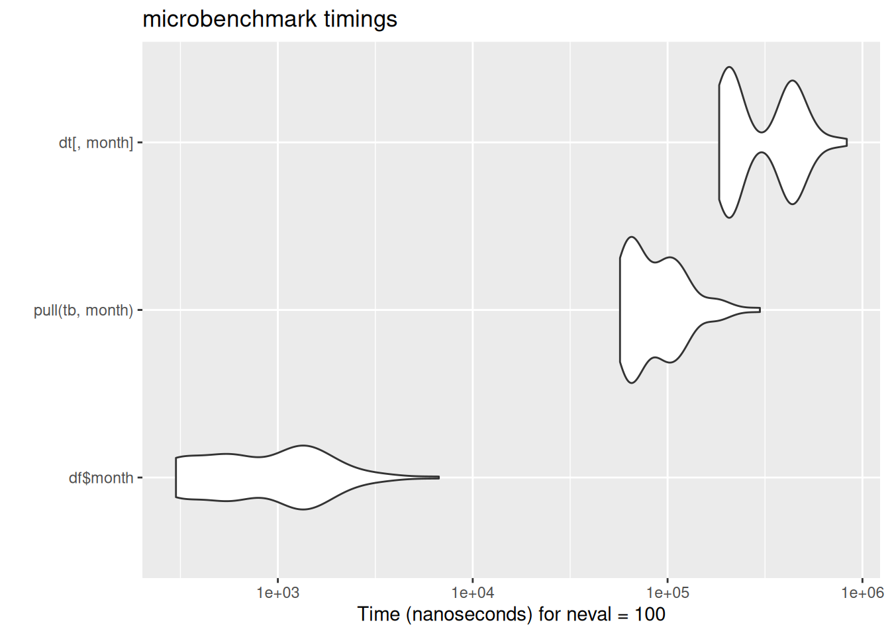
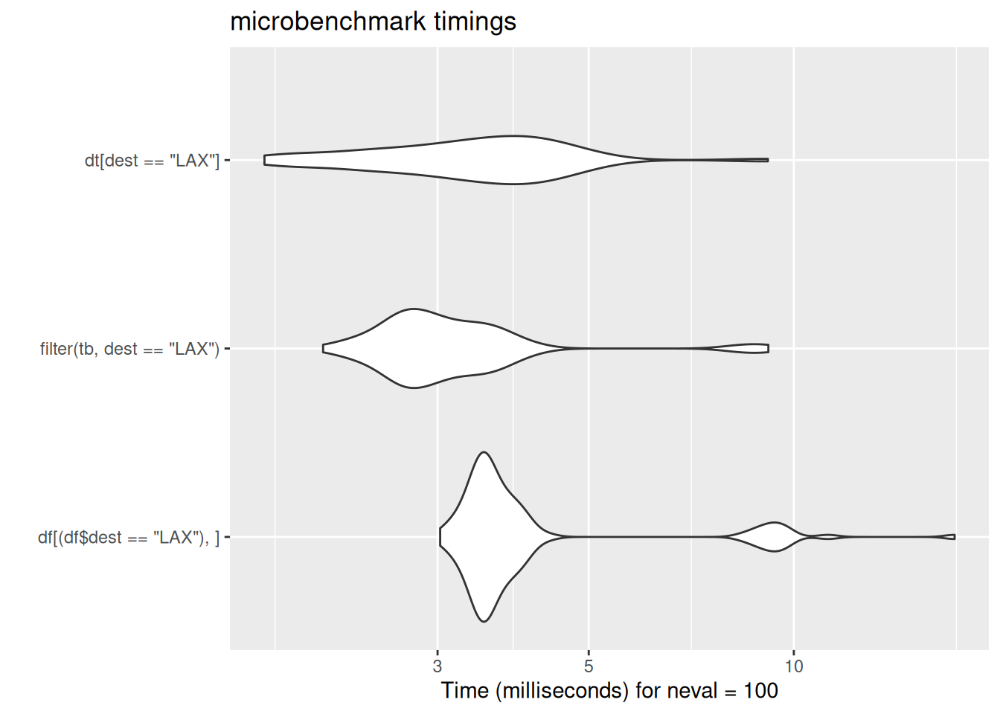
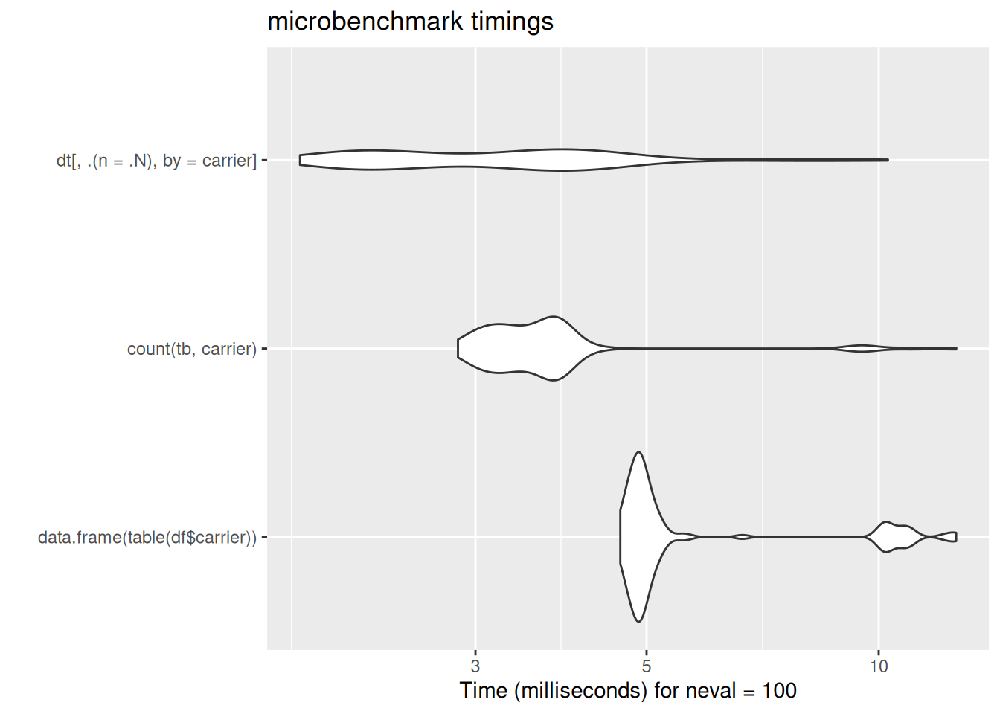

No feedback found for this session
An introduction to data.table
R
beginner
Introduction
data.table is an enhanced data.frame. It’s fast and concise, and feels very like an improved version of base-R tools for working with tabular data. This training session gives a compare-and-contrast introduction to data.table by running through some core data operations in data.table and by comparing those to similar operations in base-R and tidyverse.
There’s some sample data that you might like to download and place in your project.
There’s also a bit of benchmark data here. This was generated in R4.4.1, Rstudio desktop 2025.05.1 on Windows 10, using a fairly new-ish laptop (Intel i7-13850HX, 128Gb RAM).
Base R data.frames
In base R, the usual way of holding rectangular data is using a data frame. Perhaps the best-known example is mtcars:
mtcars mpg cyl disp hp drat wt qsec vs am gear carb
Mazda RX4 21 6 160 110 3.9 2.620 16.46 0 1 4 4
Mazda RX4 Wag 21 6 160 110 3.9 2.875 17.02 0 1 4 4
[ reached 'max' / getOption("max.print") -- omitted 30 rows ]As a reminder, there are several techniques for manipulating that data frame. For example, we can subset the rows/cols of mtcars to discard parts of the data:
mtcars[1] # column by index mpg
Mazda RX4 21.0
Mazda RX4 Wag 21.0
Datsun 710 22.8
Hornet 4 Drive 21.4
Hornet Sportabout 18.7
Valiant 18.1
Duster 360 14.3
Merc 240D 24.4
Merc 230 22.8
Merc 280 19.2
Merc 280C 17.8
Merc 450SE 16.4
Merc 450SL 17.3
Merc 450SLC 15.2
Cadillac Fleetwood 10.4
Lincoln Continental 10.4
Chrysler Imperial 14.7
Fiat 128 32.4
Honda Civic 30.4
Toyota Corolla 33.9
Toyota Corona 21.5
Dodge Challenger 15.5
AMC Javelin 15.2
Camaro Z28 13.3
Pontiac Firebird 19.2
[ reached 'max' / getOption("max.print") -- omitted 7 rows ]mtcars["mpg"] # column by name mpg
Mazda RX4 21.0
Mazda RX4 Wag 21.0
Datsun 710 22.8
Hornet 4 Drive 21.4
Hornet Sportabout 18.7
Valiant 18.1
Duster 360 14.3
Merc 240D 24.4
Merc 230 22.8
Merc 280 19.2
Merc 280C 17.8
Merc 450SE 16.4
Merc 450SL 17.3
Merc 450SLC 15.2
Cadillac Fleetwood 10.4
Lincoln Continental 10.4
Chrysler Imperial 14.7
Fiat 128 32.4
Honda Civic 30.4
Toyota Corolla 33.9
Toyota Corona 21.5
Dodge Challenger 15.5
AMC Javelin 15.2
Camaro Z28 13.3
Pontiac Firebird 19.2
[ reached 'max' / getOption("max.print") -- omitted 7 rows ]mtcars[1,] # row by index mpg cyl disp hp drat wt qsec vs am gear carb
Mazda RX4 21 6 160 110 3.9 2.62 16.46 0 1 4 4mtcars[1,][1] # value by row and column index mpg
Mazda RX4 21There are also several ways of extracting parts of that data as a vector:
mtcars[,1] # column by index [1] 21.0 21.0 22.8 21.4 18.7 18.1 14.3 24.4 22.8 19.2 17.8 16.4 17.3 15.2 10.4
[16] 10.4 14.7 32.4 30.4 33.9 21.5 15.5 15.2 13.3 19.2
[ reached 'max' / getOption("max.print") -- omitted 7 entries ]mtcars[["mpg"]] # column by name [1] 21.0 21.0 22.8 21.4 18.7 18.1 14.3 24.4 22.8 19.2 17.8 16.4 17.3 15.2 10.4
[16] 10.4 14.7 32.4 30.4 33.9 21.5 15.5 15.2 13.3 19.2
[ reached 'max' / getOption("max.print") -- omitted 7 entries ]mtcars$mpg # alternative, sweetened, way of column by name [1] 21.0 21.0 22.8 21.4 18.7 18.1 14.3 24.4 22.8 19.2 17.8 16.4 17.3 15.2 10.4
[16] 10.4 14.7 32.4 30.4 33.9 21.5 15.5 15.2 13.3 19.2
[ reached 'max' / getOption("max.print") -- omitted 7 entries ]mtcars[1,] |>
unlist() # usual way of taking a row as a vector mpg cyl disp hp drat wt qsec vs am gear carb
21.00 6.00 160.00 110.00 3.90 2.62 16.46 0.00 1.00 4.00 4.00 mtcars[3,7] # single value by row and column index[1] 18.61Much of the data.table syntax we’ll look at in this session has a passing resemblance to these base R ways of working, but with several important differences. It’s therefore useful to (re)familiarise yourself with these basics before moving on to the new material.
Package loading
Reading data
This session is based on comparisons of simple tasks between base R, tidyverse, and data.table. We’ll start with three different methods for loading csv data which create subtly different objects in the three cases.

In case these violin plots are new to you: these are the output of the microbenchmark package, which repeatedly runs bits of code while timing their speed of execution. The wider the violin (the white blobs) the greater the number of times the code ran at that speed. The further left the blob, the faster the code. Here, data.table’s fread ran much much faster than either base-R read.csv or tidyverse read_csv. There is some code for the benchmarking data here which is included for interest.
Code
# data reading ----
dat_read <- microbenchmark(
df <- read.csv(local_path),
tb <- read_csv(local_path),
dt <- fread(local_path)
)
# col to col ----
col_subset <- microbenchmark(
df["month"], # base-R ish subsetting
tb |>
select(month), # tidy
dt[,.(month)] # dt
)
# col to vec ----
vec_subset2 <- microbenchmark(
df$month, # base-R ish subsetting
tb |>
pull(month), # tidy
dt[, month] # usual DT approach
)
# rows ----
row_subset <- microbenchmark(
df[1:2,], # rows
tb |>
slice(1:2),
dt[1:2]
)
# filter ----
filter_subset <- microbenchmark(
df[(df$dest == "LAX"),],
tb |>
filter(dest == "LAX"),
dt[dest == "LAX"]
)
# ungrouped summarize ----
ungrouped_summaries <- microbenchmark(
data.frame(mean = mean(df$hour)),
tb |>
summarise(mean = mean(hour)),
dt[,.(mean = mean(hour))]
)
# grouped summarize ----
grouped_summaries <- microbenchmark(
aggregate(hour ~ carrier, data = df, FUN = mean),
tb |>
group_by(carrier) |>
summarise(mean(hour)),
dt[,mean(hour), carrier]
)
# subset then group then summarise ----
subset_grouped_summaries <- microbenchmark(
aggregate(distance ~ carrier, data = subset(df, month == 9), FUN = "sum"),
tb |>
filter(month == 9) |>
group_by(carrier) |>
summarise(sum = sum(distance)),
dt[month == 9, sum(distance), carrier]
)
# arrange ----
arranged <- microbenchmark(
df[order(df$dep_delay),],
tb |>
arrange(dep_delay),
dt[order(dep_delay)]
)
autoplot(arranged)
# count ----
counts <- microbenchmark(
data.frame(table(df$carrier)),
tb |>
count(carrier),
dt[, .(n = .N), by = carrier]
)
# mutate ----
mutates <- microbenchmark(
{df$dist_km <- df$distance * 1.6
df[c("dist_km", "carrier", "origin", "dest")]},
tidyverse = tb |>
mutate(dist_km = distance * 1.6) |>
select(dist_km, carrier, origin, dest),
dt[,.(dist_km = distance * 1.6, carrier, origin, dest)],
dt[,.(dist_km = distance*1.6),.(carrier,origin, dest)]
)
# subset several cols
col_subset_multiple <- microbenchmark(
df[c("day", "month", "year")],
tb |>
select(day, month, year),
dt[, list("day", "month", "year")]
)
bench_dat <- list(dat_read = dat_read,
col_subset = col_subset,
vec_subset = vec_subset,
row_subset = row_subset,
filter_subset = filter_subset,
ungrouped_summaries = ungrouped_summaries,
grouped_summaries = grouped_summaries,
subset_grouped_summaries = subset_grouped_summaries,
arranged = arranged,
counts = counts,
mutates = mutates,
col_subset_multiple = col_subset_multiple)
write_rds(bench_dat, "data/bench_dat.rds") Objects
Note that the three different csv reading functions create different slightly different objects:
class(tb)[1] "spec_tbl_df" "tbl_df" "tbl" "data.frame" class(dt)[1] "data.table" "data.frame"class(df)[1] "data.frame"data.table has its own data structure: obviously enough, the data.table. You can create data.tables using fread, or with care, convert data.frames/tibbles using setDT. The reason for needing care is that setDT (and a few other functions in data.table) modify in place. This is one of the few cases in R where you can change an object without assigning:
[1] "tbl_df" "tbl" "data.frame"[1] "data.table" "data.frame"[1] "data.frame"[1] "tbl_df" "tbl" "data.frame"What’s the big idea
If you’re used to working with tidyverse, data.table takes a radically different approach to working with data. The standard way of representing data.table syntax is as follows:
dt[i, j, by]
This means:
- take dt - a data.table
- subset or reorder its rows by i
- subset columns or calculate by j
- while grouping by by
Unless you’ve done lots of SQL before, that’s likely to be confusing. So let’s do some simple operations first, then return to the overview.
Subset one column to single-column df/tibble/dt
df["month"] month
1 1
2 1
3 1
4 1
5 1
6 1
7 1
8 1
9 1
10 1
11 1
12 1
13 1
14 1
15 1
16 1
17 1
18 1
19 1
20 1
21 1
22 1
23 1
24 1
25 1
[ reached 'max' / getOption("max.print") -- omitted 253291 rows ]tb |>
select(month)# A tibble: 253,316 × 1
month
<dbl>
1 1
2 1
3 1
4 1
5 1
6 1
7 1
8 1
9 1
10 1
# ℹ 253,306 more rowsdt[, "month"] month
<int>
1: 1
2: 1
3: 1
4: 1
5: 1
---
253312: 10
253313: 10
253314: 10
253315: 10
253316: 10# or
dt[, list(month)] month
<int>
1: 1
2: 1
3: 1
4: 1
5: 1
---
253312: 10
253313: 10
253314: 10
253315: 10
253316: 10# or
dt[, .(month)] month
<int>
1: 1
2: 1
3: 1
4: 1
5: 1
---
253312: 10
253313: 10
253314: 10
253315: 10
253316: 10Subset several columns to df/tibble/dt
df[c("day", "month", "year")] day month year
1 1 1 2014
2 1 1 2014
3 1 1 2014
4 1 1 2014
5 1 1 2014
6 1 1 2014
7 1 1 2014
8 1 1 2014
[ reached 'max' / getOption("max.print") -- omitted 253308 rows ]tb |>
select(day, month, year)# A tibble: 253,316 × 3
day month year
<dbl> <dbl> <dbl>
1 1 1 2014
2 1 1 2014
3 1 1 2014
4 1 1 2014
5 1 1 2014
6 1 1 2014
7 1 1 2014
8 1 1 2014
9 1 1 2014
10 1 1 2014
# ℹ 253,306 more rowsdt[, list(day, month, year)] # list day month year
<int> <int> <int>
1: 1 1 2014
2: 1 1 2014
3: 1 1 2014
4: 1 1 2014
5: 1 1 2014
---
253312: 31 10 2014
[ reached 'max' / getOption("max.print") -- omitted 4 rows ]dt[,.(day, month, year)] # idiomatic list shorthand day month year
<int> <int> <int>
1: 1 1 2014
2: 1 1 2014
3: 1 1 2014
4: 1 1 2014
5: 1 1 2014
---
253312: 31 10 2014
[ reached 'max' / getOption("max.print") -- omitted 4 rows ]
Single column to vector
df$month [1] 1 1 1 1 1 1 1 1 1 1 1 1 1 1 1 1 1 1 1 1 1 1 1 1 1
[ reached 'max' / getOption("max.print") -- omitted 253291 entries ]tb |>
pull(month) [1] 1 1 1 1 1 1 1 1 1 1 1 1 1 1 1 1 1 1 1 1 1 1 1 1 1
[ reached 'max' / getOption("max.print") -- omitted 253291 entries ]dt[, month] [1] 1 1 1 1 1 1 1 1 1 1 1 1 1 1 1 1 1 1 1 1 1 1 1 1 1
[ reached 'max' / getOption("max.print") -- omitted 253291 entries ]
Subset rows
df[1:2,] # rows year month day dep_delay arr_delay carrier origin dest air_time distance hour
1 2014 1 1 14 13 AA JFK LAX 359 2475 9
2 2014 1 1 -3 13 AA JFK LAX 363 2475 11tb |>
slice(1:2)# A tibble: 2 × 11
year month day dep_delay arr_delay carrier origin dest air_time distance
<dbl> <dbl> <dbl> <dbl> <dbl> <chr> <chr> <chr> <dbl> <dbl>
1 2014 1 1 14 13 AA JFK LAX 359 2475
2 2014 1 1 -3 13 AA JFK LAX 363 2475
# ℹ 1 more variable: hour <dbl>dt[1:2] year month day dep_delay arr_delay carrier origin dest air_time
<int> <int> <int> <int> <int> <char> <char> <char> <int>
1: 2014 1 1 14 13 AA JFK LAX 359
distance hour
<int> <int>
1: 2475 9
[ reached 'max' / getOption("max.print") -- omitted 1 row ]
Filter rows
df[(df$dest == "LAX"),] year month day dep_delay arr_delay carrier origin dest air_time distance hour
1 2014 1 1 14 13 AA JFK LAX 359 2475 9
2 2014 1 1 -3 13 AA JFK LAX 363 2475 11
[ reached 'max' / getOption("max.print") -- omitted 14432 rows ]tb |>
filter(dest == "LAX")# A tibble: 14,434 × 11
year month day dep_delay arr_delay carrier origin dest air_time distance
<dbl> <dbl> <dbl> <dbl> <dbl> <chr> <chr> <chr> <dbl> <dbl>
1 2014 1 1 14 13 AA JFK LAX 359 2475
2 2014 1 1 -3 13 AA JFK LAX 363 2475
3 2014 1 1 2 9 AA JFK LAX 351 2475
4 2014 1 1 2 1 AA JFK LAX 350 2475
5 2014 1 1 4 0 AA EWR LAX 339 2454
6 2014 1 1 -2 -18 AA JFK LAX 338 2475
7 2014 1 1 -3 -14 AA JFK LAX 356 2475
8 2014 1 1 142 133 AA JFK LAX 345 2475
9 2014 1 1 -4 11 B6 JFK LAX 349 2475
10 2014 1 1 3 -10 B6 JFK LAX 349 2475
# ℹ 14,424 more rows
# ℹ 1 more variable: hour <dbl>dt[dest == "LAX"] year month day dep_delay arr_delay carrier origin dest air_time
<int> <int> <int> <int> <int> <char> <char> <char> <int>
1: 2014 1 1 14 13 AA JFK LAX 359
distance hour
<int> <int>
1: 2475 9
[ reached 'max' / getOption("max.print") -- omitted 10 rows ]
Summarize
so return a new df/tibble/dt
Group and summarize
aggregate(hour ~ carrier, data = df, FUN = "mean") carrier hour
1 AA 12.389590
2 AS 12.881533
3 B6 13.430518
4 DL 13.007605
5 EV 13.535121
6 F9 13.534884
7 FL 14.270184
8 HA 9.115385
9 MQ 13.750849
10 OO 10.670000
11 UA 12.997536
12 US 12.050448
[ reached 'max' / getOption("max.print") -- omitted 2 rows ]dt[,mean(hour), carrier] carrier V1
<char> <num>
1: AA 12.389590
2: AS 12.881533
3: B6 13.430518
4: DL 13.007605
5: EV 13.535121
6: F9 13.534884
7: FL 14.270184
8: HA 9.115385
9: MQ 13.750849
10: VX 12.322493
11: WN 12.696354
[ reached 'max' / getOption("max.print") -- omitted 3 rows ]autoplot(bench_dat$grouped_summaries)Subset, group, summarise
carrier distance
1 AA 3687744
2 AS 144120
3 B6 4613124
4 DL 5094885
5 EV 2386348
6 F9 90720
7 HA 124575
8 MQ 906560
9 OO 35184
10 UA 7109454
11 US 906256
12 VX 1218951
[ reached 'max' / getOption("max.print") -- omitted 1 rows ]dt[month == 9, sum(distance), carrier] carrier V1
<char> <int>
1: AA 3687744
2: AS 144120
3: B6 4613124
4: DL 5094885
5: VX 1218951
6: WN 1297176
7: EV 2386348
8: F9 90720
9: HA 124575
10: MQ 906560
11: OO 35184
[ reached 'max' / getOption("max.print") -- omitted 2 rows ]autoplot(bench_dat$subset_grouped_summaries)Arrange
df[order(df$dep_delay),] year month day dep_delay arr_delay carrier origin dest air_time distance
14836 2014 1 21 -112 -112 DL LGA MSP 153 1020
70868 2014 4 1 -34 -40 DL JFK SJU 192 1598
hour
14836 14
70868 23
[ reached 'max' / getOption("max.print") -- omitted 253314 rows ]tb |>
arrange(dep_delay)# A tibble: 253,316 × 11
year month day dep_delay arr_delay carrier origin dest air_time distance
<dbl> <dbl> <dbl> <dbl> <dbl> <chr> <chr> <chr> <dbl> <dbl>
1 2014 1 21 -112 -112 DL LGA MSP 153 1020
2 2014 4 1 -34 -40 DL JFK SJU 192 1598
3 2014 1 9 -27 18 AA EWR LAX 332 2454
4 2014 2 2 -27 -42 EV LGA BGR 51 378
5 2014 8 26 -25 -24 B6 LGA FLL 134 1076
6 2014 1 13 -24 -1 AA EWR DFW 229 1372
7 2014 8 26 -24 -41 B6 EWR MCO 123 937
8 2014 8 31 -24 -30 B6 EWR MCO 120 937
9 2014 10 28 -24 -38 B6 EWR FLL 142 1065
10 2014 1 14 -23 -24 EV EWR MHT 42 209
# ℹ 253,306 more rows
# ℹ 1 more variable: hour <dbl>dt[order(dep_delay)] year month day dep_delay arr_delay carrier origin dest air_time
<int> <int> <int> <int> <int> <char> <char> <char> <int>
1: 2014 1 21 -112 -112 DL LGA MSP 153
distance hour
<int> <int>
1: 1020 14
[ reached 'max' / getOption("max.print") -- omitted 10 rows ]autoplot(bench_dat$arranged)Count
data.frame(table(df$carrier)) Var1 Freq
1 AA 26302
2 AS 574
3 B6 44479
4 DL 41683
5 EV 39819
6 F9 473
7 FL 1251
8 HA 260
9 MQ 18559
10 OO 200
11 UA 46267
12 US 16750
[ reached 'max' / getOption("max.print") -- omitted 2 rows ]tb |>
count(carrier)# A tibble: 14 × 2
carrier n
<chr> <int>
1 AA 26302
2 AS 574
3 B6 44479
4 DL 41683
5 EV 39819
6 F9 473
7 FL 1251
8 HA 260
9 MQ 18559
10 OO 200
11 UA 46267
12 US 16750
13 VX 4797
14 WN 11902dt[, .(n = .N), by = carrier] carrier n
<char> <int>
1: AA 26302
2: AS 574
3: B6 44479
4: DL 41683
5: EV 39819
6: F9 473
7: FL 1251
8: HA 260
9: MQ 18559
10: VX 4797
11: WN 11902
[ reached 'max' / getOption("max.print") -- omitted 3 rows ]autoplot(bench_dat$counts)
Mutate
Mutate is perhaps the area where data.table feels most unlike either base R or tidyverse.
df$dist_km <- df$distance * 1.6
df[c("dist_km", "carrier", "origin", "dest")] dist_km carrier origin dest
1 3960.0 AA JFK LAX
2 3960.0 AA JFK LAX
3 3960.0 AA JFK LAX
4 1656.0 AA LGA PBI
5 3960.0 AA JFK LAX
6 3926.4 AA EWR LAX
[ reached 'max' / getOption("max.print") -- omitted 253310 rows ]# A tibble: 253,316 × 4
dist_km carrier origin dest
<dbl> <chr> <chr> <chr>
1 3960 AA JFK LAX
2 3960 AA JFK LAX
3 3960 AA JFK LAX
4 1656 AA LGA PBI
5 3960 AA JFK LAX
6 3926. AA EWR LAX
7 3960 AA JFK LAX
8 3960 AA JFK LAX
9 1742. AA JFK MIA
10 3875. AA JFK SEA
# ℹ 253,306 more rows# by design, dropping un-used columns:
dt[,.(dist_km = distance * 1.6, carrier, origin, dest)] dist_km carrier origin dest
<num> <char> <char> <char>
1: 3960.0 AA JFK LAX
2: 3960.0 AA JFK LAX
3: 3960.0 AA JFK LAX
4: 1656.0 AA LGA PBI
5: 3960.0 AA JFK LAX
[ reached 'max' / getOption("max.print") -- omitted 6 rows ]# or you can also effectively specify the columns to be retained as grouping variables
dt[,.(dist_km = distance*1.6),.(carrier,origin, dest)] carrier origin dest dist_km
<char> <char> <char> <num>
1: AA JFK LAX 3960.0
2: AA JFK LAX 3960.0
3: AA JFK LAX 3960.0
4: AA JFK LAX 3960.0
5: AA JFK LAX 3960.0
[ reached 'max' / getOption("max.print") -- omitted 6 rows ]# or the := operator can modify a column in place. This allows you to change a single column in a data.table without having to re-include all the other columns. Note this permanently changes the object:
new_dt <- dt
new_dt[, dist_km := distance*1.6]
new_dtIndices: <dest>, <month>
year month day dep_delay arr_delay carrier origin dest air_time
<int> <int> <int> <int> <int> <char> <char> <char> <int>
1: 2014 1 1 14 13 AA JFK LAX 359
distance hour dist_km
<int> <int> <num>
1: 2475 9 3960.0
[ reached 'max' / getOption("max.print") -- omitted 10 rows ]autoplot(bench_dat$mutates)